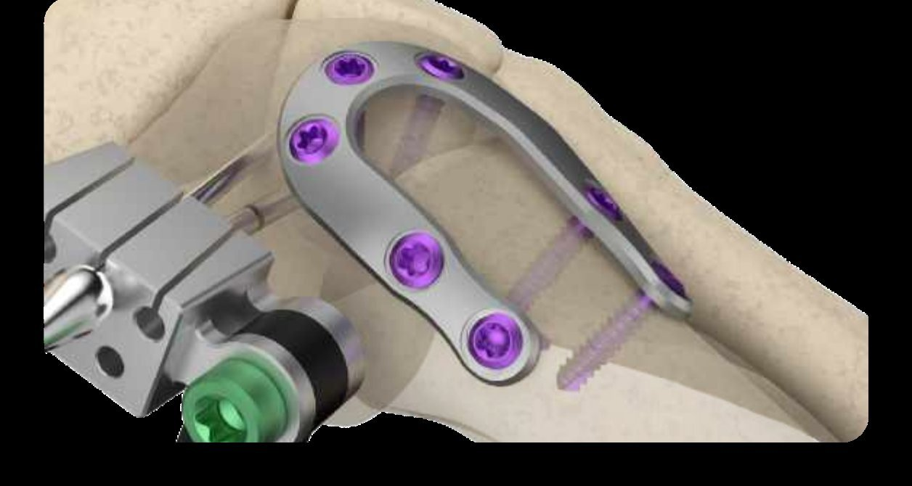

LapiLock
A Lapidus correction controlled from a single frame. Rotation, intermetatarsal angle, sagittal position and joint compression, each on its own dial, held until fixation is in.

more cycles to failure for the LapiLock U-Plate construct in independent benchtop testing.1
greater load at failure in the same independent test.1
frontal, transverse, sagittal and compression, one frame.
implant options. Fixation stays the surgeon's choice.
LapiLock™ 4D Bunion Correction
Frontal-plane derotation
A proprietary arch derotates the first metatarsal and holds the sesamoids under the crista.
Intermetatarsal correction
A blue dial closes the IM angle with a turn, controlled and measured.
Plantar and dorsal flexion
A green screw sets the sagittal position of the first ray.
Compression and distraction
A gold dial compresses or distracts the TMT joint before fixation.

Where it serves.
- Y.O.C.O. blade. “You only cut once.” Designed to remove minimal bone and achieve bone-on-bone apposition.
- Second metatarsal protected. Counter-pressure is designed to stay off the second metatarsal.
- No C-clamp. Designed to eliminate metatarsal spring-back.
- One jig, start to finish. A single frame for every step, built to protect the correction once it is set.
- Independent benchtop study, “Evaluation of Fusion’s TMT fusion plate,” comparing the LapiLock PolyLock U-Plate with a leading biplanar plating construct. Results apply to the specific test conditions. Full report on file at Fusion Orthopedics.
Bring LapiLock to your next case.
Lotus Medical brings the technology, the clinical data and the support into the room, for every case.
Scott Stojetz · 513-317-6971 · John Callahan · 330-858-6718